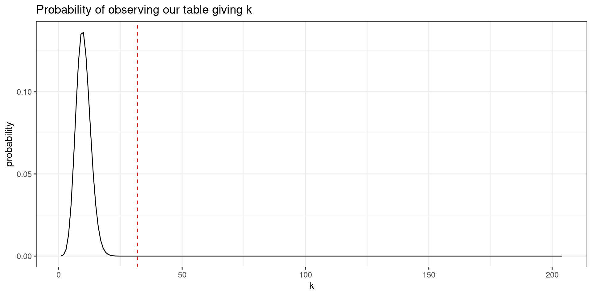
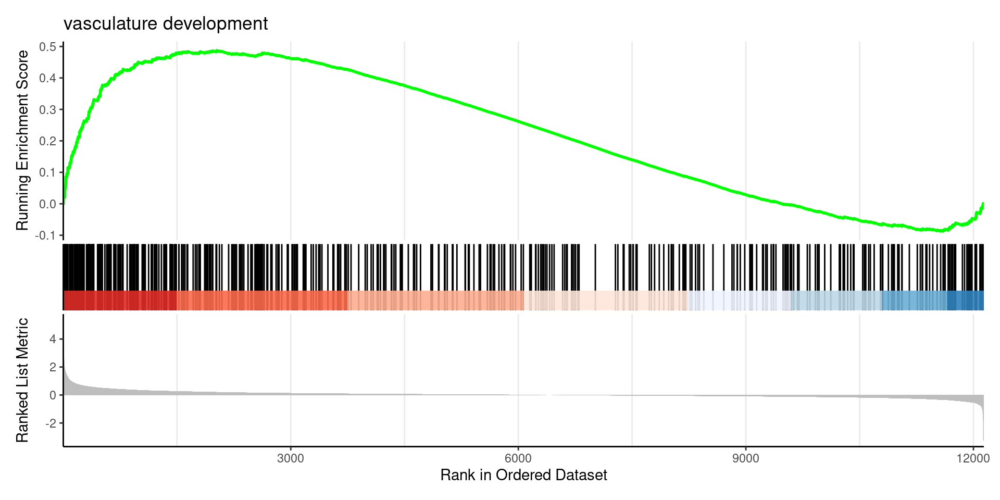
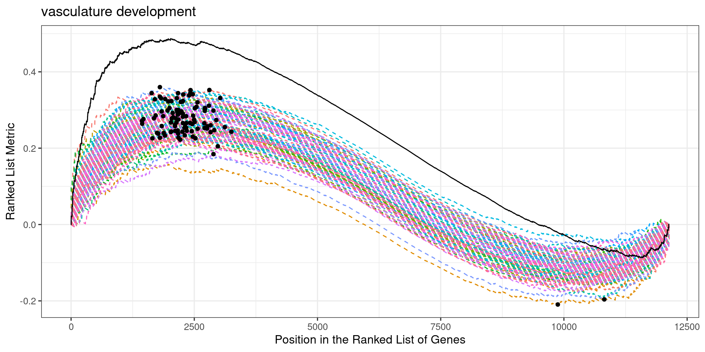
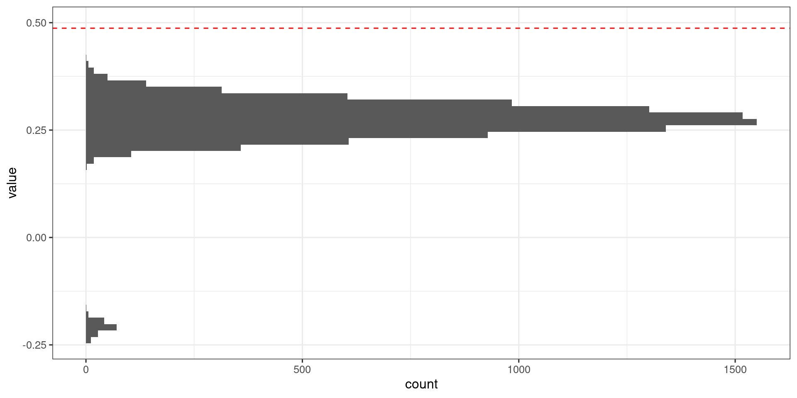

Analyse fonctionnelle de gènes et métabolites
Gene Enrichment Analysis
Introduction
Definition: Gene enrichment analysis identifies biological pathways or functions that are overrepresented in a set of genes of interest.
The interpretation of the list of differentially expressed genes can be challenging due to two scenarios:
The list is so long that it becomes cumbersome and time-consuming to analyze and interpret each gene individually.
The list is very short, and some genes may have low p-values but not low enough to meet the given threshold for significance.
Approches
To derive biological meaning from the results of differential expression analysis, there are several approaches available. Two commonly used methods are:
Over Representation Analysis (ORA): This method determines whether the differentially expressed genes are enriched in specific pathways or ontological groups. It assesses whether the observed number of genes in a particular pathway or gene ontology term is higher than what would be expected by chance.
Gene Set Enrichment Analysis (GSEA): GSEA evaluates whether a pre-defined set of genes (gene set) shows statistically significant differences between two or more biological conditions. Instead of focusing on individual genes, GSEA considers the collective behavior of genes within a gene set to identify enriched biological pathways or functional categories.
Common sources of feature sets
KEGG pathways
Gene Ontologies
Reactome
Molecular Signature Database, MSigDB (GSEA)
Manually curated gene lists
Before Functionnal analysis
From (Gene) Symbols to (Gene) IDs
Working with gene IDs, such as Ensembl IDs, instead of gene symbols is important for reproducibility in gene enrichment analysis due to the following reasons:
Gene Symbol Ambiguity: Gene symbols can be ambiguous, as multiple genes can have the same symbol. This can lead to confusion and errors when performing analyses, especially when using external databases or tools.
Uniqueness: Gene IDs are unique identifiers assigned to specific genes. They provide a standardized and consistent way of referring to genes across different datasets and analyses, ensuring accuracy and reproducibility.
Consistent Annotation: Gene IDs are linked to comprehensive and up-to-date gene annotation databases, such as Ensembl. These databases provide detailed information about gene features, genomic locations, functional annotations, and other relevant metadata.
Cross-Species Comparisons: Gene IDs enable seamless comparisons of gene enrichment results across different species.
Data Integration: Gene IDs facilitate data integration across multiple experiments or studies. They enable the merging of different datasets, such as gene expression data or functional annotations, based on a common identifier.
Long-term Accessibility: Gene IDs are stable and persist over time.
Using Gene IDs: enhances reproducibility in gene enrichment analysis by providing unique and standardized gene identifiers, enabling consistent annotation, supporting cross-species comparisons, facilitating data integration, and ensuring long-term accessibility of results.
Ensembl BioMart
BioMart provides a flexible and intuitive interface to explore and retrieve genomic data from Ensembl. It allows you to filter and select specific data attributes, enabling you to extract the information that is most relevant to your research or analysis.
Accessing BioMart: Go to the Ensembl website (https://www.ensembl.org) and click on the “BioMart” option in the menu to access the BioMart interface.
Choosing a Dataset: In the BioMart interface, you will see several tabs. Start by selecting the “CHOOSE DATABASE” tab. Here, you can choose the dataset you want to retrieve data from, such as the Ensembl genes, variation, or sequence databases.
Selecting Filters: Once you’ve chosen the dataset, click on the “CHOOSE FILTERS” tab. Here, you can specify criteria to filter the data you are interested in. For example, you can filter by gene ID, chromosome location, gene biotype, or other attributes.
Selecting Attributes: After setting your filters, switch to the “CHOOSE ATTRIBUTES” tab. Here, you can select the specific attributes or data fields you want to retrieve for the filtered data. These attributes can include gene names, chromosomal coordinates, functional annotations, or any other available information.
Retrieving Results: Once you have chosen the desired attributes, switch to the “RESULTS” tab. Click on the “Results” button to retrieve the data based on your chosen filters and attributes. The results will be displayed in a table format.
BioMart
Ensembl Biomart have an R api called bioMart:
BioMart
Now we can ask for the same thing but with R :
If the dataset is known in advance:
BioMart
Query in biomaRt
The getBM() function is the primary query function in biomaRt.
It has four main arguments:
attributes: is a vector of attributes that one wants to retrieve (= the output of the query).filters: is a vector of filters that one wil use as input to the query.values: a vector of values for the filters. In case multple filters are in use, the values argument requires a list of values where each position in the list corresponds to the position of the filters in the filters argument (see examples below).mart: is an object of class Mart, which is created by the useEnsembl() function.
BioMart
Retrieve attributes and filters to query ensembl:
BioMart
Query with getBM()
getBM(attributes = c("ensembl_gene_id","entrezgene_id","hgnc_symbol"),
filters = "ensembl_gene_id",
values = de_genes$rowname,
mart = ensembl) ensembl_gene_id entrezgene_id hgnc_symbol
1 ENSG00000006459 80853 KDM7A
2 ENSG00000008513 6482 ST3GAL1
3 ENSG00000010295 25900 IFFO1
4 ENSG00000018408 25937 WWTR1
5 ENSG00000023445 330 BIRC3
6 ENSG00000026103 355 FAS
7 ENSG00000031081 57514 ARHGAP31
8 ENSG00000047365 116984 ARAP2
9 ENSG00000049130 4254 KITLG
10 ENSG00000049759 23327 NEDD4L
11 ENSG00000056558 7185 TRAF1
12 ENSG00000058335 5923 RASGRF1
13 ENSG00000067798 89795 NAV3
14 ENSG00000067955 865 CBFB
15 ENSG00000069020 375449 MAST4
16 ENSG00000071575 28951 TRIB2
17 ENSG00000075618 6624 FSCN1
18 ENSG00000076356 5362 PLXNA2
19 ENSG00000078269 8871 SYNJ2
20 ENSG00000080546 27244 SESN1
21 ENSG00000090020 6548 SLC9A1
22 ENSG00000090776 1947 EFNB1
23 ENSG00000095752 3589 IL11
24 ENSG00000099250 8829 NRP1
25 ENSG00000100036 339665 SLC35E4
26 ENSG00000100505 114088 TRIM9
27 ENSG00000100985 4318 MMP9
28 ENSG00000101134 55816 DOK5
29 ENSG00000101187 28231 SLCO4A1
30 ENSG00000101236 11237 RNF24
31 ENSG00000102003 6855 SYP
32 ENSG00000102265 7076 TIMP1
33 ENSG00000103257 8140 SLC7A5
34 ENSG00000103647 10391 CORO2B
35 ENSG00000104856 5971 RELB
36 ENSG00000104998 9466 IL27RA
37 ENSG00000105327 27113 BBC3
38 ENSG00000105855 3696 ITGB8
39 ENSG00000106366 5054 SERPINE1
40 ENSG00000107554 23268 DNMBP
41 ENSG00000107719 27143 PALD1
42 ENSG00000108018 114815 SORCS1
43 ENSG00000108691 6347 CCL2
44 ENSG00000109220 26511 CHIC2
45 ENSG00000110047 10938 EHD1
46 ENSG00000111252 10019 SH2B3
47 ENSG00000111262 3736 KCNA1
48 ENSG00000111860 387119 CEP85L
49 ENSG00000112149 9308 CD83
50 ENSG00000112559 4188 MDFI
51 ENSG00000113070 1839 HBEGF
52 ENSG00000113721 5159 PDGFRB
53 ENSG00000115009 6364 CCL20
54 ENSG00000115641 2274 FHL2
55 ENSG00000116016 2034 EPAS1
56 ENSG00000116106 2043 EPHA4
57 ENSG00000116285 54206 ERRFI1
58 ENSG00000117152 5999 RGS4
59 ENSG00000118503 7128 TNFAIP3
60 ENSG00000118922 11278 KLF12
61 ENSG00000119681 4053 LTBP2
62 ENSG00000119772 1788 DNMT3A
63 ENSG00000120093 3213 HOXB3
64 ENSG00000120217 29126 CD274
65 ENSG00000122861 5328 PLAU
66 ENSG00000122863 9469 CHST3
67 ENSG00000123358 3164 NR4A1
68 ENSG00000123908 27161 AGO2
69 ENSG00000124145 6385 SDC4
70 ENSG00000124762 1026 CDKN1A
71 ENSG00000125089 54436 SH3TC1
72 ENSG00000125148 4502 MT2A
73 ENSG00000125398 6662 SOX9
74 ENSG00000128342 3976 LIF
75 ENSG00000128512 9732 DOCK4
76 ENSG00000128805 58504 ARHGAP22
77 ENSG00000130294 547 KIF1A
78 ENSG00000130766 83667 SESN2
79 ENSG00000131016 9590 AKAP12
80 ENSG00000131370 9467 SH3BP5
81 ENSG00000131378 23180 RFTN1
82 ENSG00000131435 8572 PDLIM4
83 ENSG00000131459 9945 GFPT2
84 ENSG00000131650 79412 KREMEN2
85 ENSG00000132334 5791 PTPRE
86 ENSG00000133083 9201 DCLK1
87 ENSG00000133639 694 BTG1
88 ENSG00000134531 2012 EMP1
89 ENSG00000134853 5156 PDGFRA
90 ENSG00000134954 2113 ETS1
91 ENSG00000135048 23670 CEMIP2
92 ENSG00000135111 6926 TBX3
93 ENSG00000135185 79161 TMEM243
94 ENSG00000135679 4193 MDM2
95 ENSG00000136842 7111 TMOD1
96 ENSG00000137801 7057 THBS1
97 ENSG00000137819 54852 PAQR5
98 ENSG00000138166 1847 DUSP5
99 ENSG00000138271 53836 GPR87
100 ENSG00000138623 8482 SEMA7A
101 ENSG00000138675 2250 FGF5
102 ENSG00000138771 57619 SHROOM3
103 ENSG00000138795 51176 LEF1
104 ENSG00000139289 22822 PHLDA1
105 ENSG00000139624 91012 CERS5
106 ENSG00000140379 597 BCL2A1
107 ENSG00000141524 11322 TMC6
108 ENSG00000142627 1969 EPHA2
109 ENSG00000143067 90874 ZNF697
110 ENSG00000144136 6574 SLC20A1
111 ENSG00000146232 4794 NFKBIE
112 ENSG00000146376 93663 ARHGAP18
113 ENSG00000146648 1956 EGFR
114 ENSG00000148516 6935 ZEB1
115 ENSG00000148841 85450 ITPRIP
116 ENSG00000149256 26011 TENM4
117 ENSG00000149948 8091 HMGA2
118 ENSG00000150961 9871 SEC24D
119 ENSG00000150967 23457 ABCB9
120 ENSG00000151062 93589 CACNA2D4
121 ENSG00000151067 775 CACNA1C
122 ENSG00000151067 100874369 CACNA1C
123 ENSG00000151474 55691 FRMD4A
124 ENSG00000153162 654 BMP6
125 ENSG00000153317 50807 ASAP1
126 ENSG00000153814 221895 JAZF1
127 ENSG00000153815 80790 CMIP
128 ENSG00000154783 152273 FGD5
129 ENSG00000156804 114907 FBXO32
130 ENSG00000157933 6497 SKI
131 ENSG00000159128 3460 IFNGR2
132 ENSG00000159388 7832 BTG2
133 ENSG00000160223 23308 ICOSLG
134 ENSG00000160223 102723996 ICOSLG
135 ENSG00000161509 2905 GRIN2C
136 ENSG00000162545 55450 CAMK2N1
137 ENSG00000162711 114548 NLRP3
138 ENSG00000162892 11009 IL24
139 ENSG00000163046 554226 ANKRD30BL
140 ENSG00000163235 7039 TGFA
141 ENSG00000163293 152519 NIPAL1
142 ENSG00000163297 118429 ANTXR2
143 ENSG00000163347 9076 CLDN1
144 ENSG00000163359 1293 COL6A3
145 ENSG00000163513 7048 TGFBR2
146 ENSG00000163661 5806 PTX3
147 ENSG00000164086 1849 DUSP7
148 ENSG00000164171 3673 ITGA2
149 ENSG00000164283 11082 ESM1
150 ENSG00000164484 114801 TMEM200A
151 ENSG00000166025 154810 AMOTL1
152 ENSG00000166401 5271 SERPINB8
153 ENSG00000166922 6447 SCG5
154 ENSG00000167977 54442 KCTD5
155 ENSG00000169252 154 ADRB2
156 ENSG00000169429 3576 CXCL8
157 ENSG00000169436 169044 COL22A1
158 ENSG00000169851 5099 PCDH7
159 ENSG00000169991 126917 IFFO2
160 ENSG00000170006 201799 TMEM154
161 ENSG00000170421 3856 KRT8
162 ENSG00000170439 196410 METTL7B
163 ENSG00000171310 50515 CHST11
164 ENSG00000171617 8507 ENC1
165 ENSG00000171903 57834 CYP4F11
166 ENSG00000173166 65059 RAPH1
167 ENSG00000173221 2745 GLRX
168 ENSG00000173227 91683 SYT12
169 ENSG00000173846 1263 PLK3
170 ENSG00000174343 55584 CHRNA9
171 ENSG00000174791 9610 RIN1
172 ENSG00000175040 9435 CHST2
173 ENSG00000175294 117144 CATSPER1
174 ENSG00000175592 8061 FOSL1
175 ENSG00000175832 2118 ETV4
176 ENSG00000175984 163259 DENND2C
177 ENSG00000176170 8877 SPHK1
178 ENSG00000177076 340485 ACER2
179 ENSG00000177311 253461 ZBTB38
180 ENSG00000177614 79605 PGBD5
181 ENSG00000178104 9659 PDE4DIP
182 ENSG00000178104 124904395 PDE4DIP
183 ENSG00000179542 139065 SLITRK4
184 ENSG00000180921 286077 FAM83H
185 ENSG00000181218 92815 H2AC25
186 ENSG00000181790 575 ADGRB1
187 ENSG00000182261 338322 NLRP10
188 ENSG00000184156 3786 KCNQ3
189 ENSG00000184384 84441 MAML2
190 ENSG00000184702 5413 SEPTIN5
191 ENSG00000184792 23762 OSBP2
192 ENSG00000185022 23764 MAFF
193 ENSG00000187678 81848 SPRY4
194 ENSG00000187801 65243 ZFP69B
195 ENSG00000188825 NA LINC00910
196 ENSG00000188910 2707 GJB3
197 ENSG00000189362 100131211 NEMP2
198 ENSG00000196083 3556 IL1RAP
199 ENSG00000196526 60312 AFAP1
200 ENSG00000196576 23654 PLXNB2
201 ENSG00000196878 3914 LAMB3
202 ENSG00000196935 57522 SRGAP1
203 ENSG00000197019 29950 SERTAD1
204 ENSG00000197467 1305 COL13A1
205 ENSG00000197852 55924 INKA2
206 ENSG00000198142 65124 SOWAHC
207 ENSG00000198576 23237 ARC
208 ENSG00000198959 7052 TGM2
209 ENSG00000200312 NA RN7SKP255
210 ENSG00000200434 124907486 RNA5-8SP2
211 ENSG00000200434 124908528 RNA5-8SP2
212 ENSG00000201098 6084 RNY1
213 ENSG00000203485 64423 INF2
214 ENSG00000204131 340527 NHSL2
215 ENSG00000206538 389136 VGLL3
216 ENSG00000212724 730755 KRTAP2-3
217 ENSG00000213626 81606 LBH
218 ENSG00000213694 1903 S1PR3
219 ENSG00000219438 25817 TAFA5
220 ENSG00000222032 NA
221 ENSG00000222626 NA RNU2-48P
222 ENSG00000225721 NA
223 ENSG00000225968 392617 ELFN1
224 ENSG00000227195 284801 MIR663AHG
225 ENSG00000229807 7503 XIST
226 ENSG00000234814 NA SVIL2P
227 ENSG00000234961 NA
228 ENSG00000235884 NA LINC00941
229 ENSG00000236609 54753 ZNF853
230 ENSG00000238266 100507127 LINC00707
231 ENSG00000240602 NA AADACP1
232 ENSG00000240891 257068 PLCXD2
233 ENSG00000248323 NA LUCAT1
234 ENSG00000250337 643401 PURPL
235 ENSG00000251011 NA TMEM108-AS1
236 ENSG00000254741 NA
237 ENSG00000254838 387751 GVINP1
238 ENSG00000255248 399959 MIR100HG
239 ENSG00000258590 NA NBEAP1
240 ENSG00000260912 NA
241 ENSG00000260920 NA
242 ENSG00000264462 103504731 MIR3648-2
243 ENSG00000266088 NA
244 ENSG00000269968 NA
245 ENSG00000271225 NA BNIP3P4Using archived versions of Ensembl
name date url version
1 Ensembl GRCh37 Feb 2014 https://grch37.ensembl.org GRCh37
2 Ensembl 109 Feb 2023 https://feb2023.archive.ensembl.org 109
3 Ensembl 108 Oct 2022 https://oct2022.archive.ensembl.org 108
4 Ensembl 107 Jul 2022 https://jul2022.archive.ensembl.org 107
5 Ensembl 106 Apr 2022 https://apr2022.archive.ensembl.org 106
6 Ensembl 105 Dec 2021 https://dec2021.archive.ensembl.org 105
7 Ensembl 104 May 2021 https://may2021.archive.ensembl.org 104
8 Ensembl 103 Feb 2021 https://feb2021.archive.ensembl.org 103
9 Ensembl 102 Nov 2020 https://nov2020.archive.ensembl.org 102
10 Ensembl 101 Aug 2020 https://aug2020.archive.ensembl.org 101
11 Ensembl 100 Apr 2020 https://apr2020.archive.ensembl.org 100
12 Ensembl 99 Jan 2020 https://jan2020.archive.ensembl.org 99
13 Ensembl 98 Sep 2019 https://sep2019.archive.ensembl.org 98
14 Ensembl 97 Jul 2019 https://jul2019.archive.ensembl.org 97
15 Ensembl 96 Apr 2019 https://apr2019.archive.ensembl.org 96
16 Ensembl 95 Jan 2019 https://jan2019.archive.ensembl.org 95
17 Ensembl 94 Oct 2018 https://oct2018.archive.ensembl.org 94
18 Ensembl 93 Jul 2018 https://jul2018.archive.ensembl.org 93
19 Ensembl 92 Apr 2018 https://apr2018.archive.ensembl.org 92
20 Ensembl 80 May 2015 https://may2015.archive.ensembl.org 80
21 Ensembl 77 Oct 2014 https://oct2014.archive.ensembl.org 77
22 Ensembl 75 Feb 2014 https://feb2014.archive.ensembl.org 75
23 Ensembl 54 May 2009 https://may2009.archive.ensembl.org 54
current_release
1
2 *
3
4
5
6
7
8
9
10
11
12
13
14
15
16
17
18
19
20
21
22
23 AnnotationHub
Get proper annotation for AnnotationHub using BiocHubsShiny:
The BiocHubsShiny package allows users to visually explore the AnnotationHub and ExperimentHub resources via shiny. It provides a tabular display of the available resources with the ability to filter and search through the column fields.1
AnnotationHub
Paste the code from BiocHubsShiny and get the EnsemblDB object
## Make sure BiocManager is installed
if (!require('BiocManager', quietly = TRUE))
install.packages('BiocManager')
## Make sure AnnotationHub is installed
if (!require("AnnotationHub", quietly = TRUE))
BiocManager::install("AnnotationHub")
## Use this code to download the resource
library("AnnotationHub")
hub <- AnnotationHub()
## Select rows in the table
ens.db <- hub[['AH109336']]
ens.dbEnsDb for Ensembl:
|Backend: SQLite
|Db type: EnsDb
|Type of Gene ID: Ensembl Gene ID
|Supporting package: ensembldb
|Db created by: ensembldb package from Bioconductor
|script_version: 0.3.7
|Creation time: Fri Oct 28 05:24:43 2022
|ensembl_version: 108
|ensembl_host: localhost
|Organism: Homo sapiens
|taxonomy_id: 9606
|genome_build: GRCh38
|DBSCHEMAVERSION: 2.2
| No. of genes: 70616.
| No. of transcripts: 275721.
|Protein data available.AnnotationHub
Object description
[1] "CANONICALTRANSCRIPT" "DESCRIPTION" "ENTREZID"
[4] "EXONID" "EXONIDX" "EXONSEQEND"
[7] "EXONSEQSTART" "GCCONTENT" "GENEBIOTYPE"
[10] "GENEID" "GENEIDVERSION" "GENENAME"
[13] "GENESEQEND" "GENESEQSTART" "INTERPROACCESSION"
[16] "ISCIRCULAR" "PROTDOMEND" "PROTDOMSTART"
[19] "PROTEINDOMAINID" "PROTEINDOMAINSOURCE" "PROTEINID"
[22] "PROTEINSEQUENCE" "SEQCOORDSYSTEM" "SEQLENGTH"
[25] "SEQNAME" "SEQSTRAND" "SYMBOL"
[28] "TXBIOTYPE" "TXCDSSEQEND" "TXCDSSEQSTART"
[31] "TXEXTERNALNAME" "TXID" "TXIDVERSION"
[34] "TXISCANONICAL" "TXNAME" "TXSEQEND"
[37] "TXSEQSTART" "TXSUPPORTLEVEL" "UNIPROTDB"
[40] "UNIPROTID" "UNIPROTMAPPINGTYPE" AnnotationHub
Get full gene annotation (gtf like)
GRanges object with 70616 ranges and 9 metadata columns:
seqnames ranges strand | gene_id
<Rle> <IRanges> <Rle> | <character>
ENSG00000290825 1 11869-14409 + | ENSG00000290825
ENSG00000223972 1 12010-13670 + | ENSG00000223972
ENSG00000227232 1 14404-29570 - | ENSG00000227232
ENSG00000278267 1 17369-17436 - | ENSG00000278267
ENSG00000243485 1 29554-31109 + | ENSG00000243485
... ... ... ... . ...
ENSG00000224240 Y 26549425-26549743 + | ENSG00000224240
ENSG00000227629 Y 26586642-26591601 - | ENSG00000227629
ENSG00000237917 Y 26594851-26634652 - | ENSG00000237917
ENSG00000231514 Y 26626520-26627159 - | ENSG00000231514
ENSG00000235857 Y 56855244-56855488 + | ENSG00000235857
gene_name gene_biotype seq_coord_system
<character> <character> <character>
ENSG00000290825 DDX11L2 lncRNA chromosome
ENSG00000223972 DDX11L1 transcribed_unproces.. chromosome
ENSG00000227232 WASH7P unprocessed_pseudogene chromosome
ENSG00000278267 MIR6859-1 miRNA chromosome
ENSG00000243485 MIR1302-2HG lncRNA chromosome
... ... ... ...
ENSG00000224240 CYCSP49 processed_pseudogene chromosome
ENSG00000227629 SLC25A15P1 unprocessed_pseudogene chromosome
ENSG00000237917 PARP4P1 unprocessed_pseudogene chromosome
ENSG00000231514 CCNQP2 processed_pseudogene chromosome
ENSG00000235857 CTBP2P1 processed_pseudogene chromosome
description gene_id_version canonical_transcript
<character> <character> <character>
ENSG00000290825 DEAD/H-box helicase .. ENSG00000290825.1 ENST00000456328
ENSG00000223972 DEAD/H-box helicase .. ENSG00000223972.6 ENST00000450305
ENSG00000227232 WASP family homolog .. ENSG00000227232.5 ENST00000488147
ENSG00000278267 microRNA 6859-1 [Sou.. ENSG00000278267.1 ENST00000619216
ENSG00000243485 MIR1302-2 host gene .. ENSG00000243485.5 ENST00000473358
... ... ... ...
ENSG00000224240 CYCS pseudogene 49 [.. ENSG00000224240.1 ENST00000420810
ENSG00000227629 solute carrier famil.. ENSG00000227629.1 ENST00000456738
ENSG00000237917 poly(ADP-ribose) pol.. ENSG00000237917.1 ENST00000435945
ENSG00000231514 CCNQ pseudogene 2 [S.. ENSG00000231514.1 ENST00000435741
ENSG00000235857 CTBP2 pseudogene 1 [.. ENSG00000235857.1 ENST00000431853
symbol entrezid
<character> <list>
ENSG00000290825 DDX11L2 84771,727856,100287102,...
ENSG00000223972 DDX11L1 <NA>
ENSG00000227232 WASH7P <NA>
ENSG00000278267 MIR6859-1 102466751
ENSG00000243485 MIR1302-2HG <NA>
... ... ...
ENSG00000224240 CYCSP49 <NA>
ENSG00000227629 SLC25A15P1 <NA>
ENSG00000237917 PARP4P1 <NA>
ENSG00000231514 CCNQP2 <NA>
ENSG00000235857 CTBP2P1 <NA>
-------
seqinfo: 457 sequences (1 circular) from GRCh38 genomeGRanges object with 275721 ranges and 11 metadata columns:
seqnames ranges strand | tx_id
<Rle> <IRanges> <Rle> | <character>
ENST00000456328 1 11869-14409 + | ENST00000456328
ENST00000450305 1 12010-13670 + | ENST00000450305
ENST00000488147 1 14404-29570 - | ENST00000488147
ENST00000619216 1 17369-17436 - | ENST00000619216
ENST00000473358 1 29554-31097 + | ENST00000473358
... ... ... ... . ...
ENST00000420810 Y 26549425-26549743 + | ENST00000420810
ENST00000456738 Y 26586642-26591601 - | ENST00000456738
ENST00000435945 Y 26594851-26634652 - | ENST00000435945
ENST00000435741 Y 26626520-26627159 - | ENST00000435741
ENST00000431853 Y 56855244-56855488 + | ENST00000431853
tx_biotype tx_cds_seq_start tx_cds_seq_end
<character> <integer> <integer>
ENST00000456328 lncRNA <NA> <NA>
ENST00000450305 transcribed_unproces.. <NA> <NA>
ENST00000488147 unprocessed_pseudogene <NA> <NA>
ENST00000619216 miRNA <NA> <NA>
ENST00000473358 lncRNA <NA> <NA>
... ... ... ...
ENST00000420810 processed_pseudogene <NA> <NA>
ENST00000456738 unprocessed_pseudogene <NA> <NA>
ENST00000435945 unprocessed_pseudogene <NA> <NA>
ENST00000435741 processed_pseudogene <NA> <NA>
ENST00000431853 processed_pseudogene <NA> <NA>
gene_id tx_support_level tx_id_version gc_content
<character> <integer> <character> <numeric>
ENST00000456328 ENSG00000290825 1 ENST00000456328.2 55.3410
ENST00000450305 ENSG00000223972 <NA> ENST00000450305.2 58.0696
ENST00000488147 ENSG00000227232 <NA> ENST00000488147.1 61.1399
ENST00000619216 ENSG00000278267 <NA> ENST00000619216.1 61.7647
ENST00000473358 ENSG00000243485 5 ENST00000473358.1 58.5674
... ... ... ... ...
ENST00000420810 ENSG00000224240 <NA> ENST00000420810.1 41.6928
ENST00000456738 ENSG00000227629 <NA> ENST00000456738.1 44.7368
ENST00000435945 ENSG00000237917 <NA> ENST00000435945.1 44.2875
ENST00000435741 ENSG00000231514 <NA> ENST00000435741.1 55.1562
ENST00000431853 ENSG00000235857 <NA> ENST00000431853.1 53.0612
tx_external_name tx_is_canonical tx_name
<character> <integer> <character>
ENST00000456328 DDX11L2-202 1 ENST00000456328
ENST00000450305 DDX11L1-201 1 ENST00000450305
ENST00000488147 WASH7P-201 1 ENST00000488147
ENST00000619216 MIR6859-1-201 1 ENST00000619216
ENST00000473358 MIR1302-2HG-202 1 ENST00000473358
... ... ... ...
ENST00000420810 CYCSP49-201 1 ENST00000420810
ENST00000456738 SLC25A15P1-201 1 ENST00000456738
ENST00000435945 PARP4P1-201 1 ENST00000435945
ENST00000435741 CCNQP2-201 1 ENST00000435741
ENST00000431853 CTBP2P1-201 1 ENST00000431853
-------
seqinfo: 457 sequences (1 circular) from GRCh38 genomeAnnotationHub
Gene ID conversion from Ensembl To Symbol and ENTREZ
select(ens.db, keys=de_genes$rowname,columns=c("SYMBOL", "GENEID","ENTREZID","GENENAME","GENEBIOTYPE"),keytype = "GENEID") SYMBOL GENEID ENTREZID GENENAME
1 KDM7A ENSG00000006459 80853 KDM7A
2 ST3GAL1 ENSG00000008513 6482 ST3GAL1
3 IFFO1 ENSG00000010295 25900 IFFO1
4 WWTR1 ENSG00000018408 25937 WWTR1
5 BIRC3 ENSG00000023445 330 BIRC3
6 FAS ENSG00000026103 355 FAS
7 ARHGAP31 ENSG00000031081 57514 ARHGAP31
8 ARAP2 ENSG00000047365 116984 ARAP2
9 KITLG ENSG00000049130 4254 KITLG
10 NEDD4L ENSG00000049759 23327 NEDD4L
11 TRAF1 ENSG00000056558 7185 TRAF1
12 RASGRF1 ENSG00000058335 5923 RASGRF1
13 NAV3 ENSG00000067798 89795 NAV3
14 CBFB ENSG00000067955 865 CBFB
15 MAST4 ENSG00000069020 375449 MAST4
16 TRIB2 ENSG00000071575 28951 TRIB2
17 FSCN1 ENSG00000075618 6624 FSCN1
18 PLXNA2 ENSG00000076356 5362 PLXNA2
19 SYNJ2 ENSG00000078269 8871 SYNJ2
20 SESN1 ENSG00000080546 27244 SESN1
21 SLC9A1 ENSG00000090020 6548 SLC9A1
22 EFNB1 ENSG00000090776 1947 EFNB1
23 IL11 ENSG00000095752 3589 IL11
24 NRP1 ENSG00000099250 8829 NRP1
25 SLC35E4 ENSG00000100036 339665 SLC35E4
26 TRIM9 ENSG00000100505 114088 TRIM9
27 MMP9 ENSG00000100985 4318 MMP9
28 DOK5 ENSG00000101134 55816 DOK5
29 SLCO4A1 ENSG00000101187 28231 SLCO4A1
30 RNF24 ENSG00000101236 11237 RNF24
31 SYP ENSG00000102003 6855 SYP
32 TIMP1 ENSG00000102265 7076 TIMP1
33 SLC7A5 ENSG00000103257 8140 SLC7A5
34 CORO2B ENSG00000103647 10391 CORO2B
35 RELB ENSG00000104856 5971 RELB
36 IL27RA ENSG00000104998 9466 IL27RA
37 BBC3 ENSG00000105327 27113 BBC3
38 ITGB8 ENSG00000105855 3696 ITGB8
39 SERPINE1 ENSG00000106366 5054 SERPINE1
40 DNMBP ENSG00000107554 23268 DNMBP
41 PALD1 ENSG00000107719 27143 PALD1
42 SORCS1 ENSG00000108018 114815 SORCS1
43 CCL2 ENSG00000108691 6347 CCL2
44 CHIC2 ENSG00000109220 26511 CHIC2
45 EHD1 ENSG00000110047 10938 EHD1
46 SH2B3 ENSG00000111252 10019 SH2B3
47 KCNA1 ENSG00000111262 3736 KCNA1
48 CEP85L ENSG00000111860 387119 CEP85L
49 CD83 ENSG00000112149 9308 CD83
50 MDFI ENSG00000112559 4188 MDFI
51 HBEGF ENSG00000113070 1839 HBEGF
52 PDGFRB ENSG00000113721 5159 PDGFRB
53 CCL20 ENSG00000115009 6364 CCL20
54 FHL2 ENSG00000115641 2274 FHL2
55 EPAS1 ENSG00000116016 2034 EPAS1
56 EPHA4 ENSG00000116106 2043 EPHA4
57 ERRFI1 ENSG00000116285 54206 ERRFI1
58 RGS4 ENSG00000117152 5999 RGS4
59 TNFAIP3 ENSG00000118503 7128 TNFAIP3
60 KLF12 ENSG00000118922 11278 KLF12
61 LTBP2 ENSG00000119681 4053 LTBP2
62 DNMT3A ENSG00000119772 1788 DNMT3A
63 HOXB3 ENSG00000120093 3213 HOXB3
64 CD274 ENSG00000120217 29126 CD274
65 PLAU ENSG00000122861 5328 PLAU
66 CHST3 ENSG00000122863 9469 CHST3
67 NR4A1 ENSG00000123358 3164 NR4A1
68 AGO2 ENSG00000123908 27161 AGO2
69 SDC4 ENSG00000124145 6385 SDC4
70 CDKN1A ENSG00000124762 1026 CDKN1A
71 SH3TC1 ENSG00000125089 54436 SH3TC1
72 MT2A ENSG00000125148 4502 MT2A
73 SOX9 ENSG00000125398 6662 SOX9
74 LIF ENSG00000128342 3976 LIF
75 DOCK4 ENSG00000128512 9732 DOCK4
76 ARHGAP22 ENSG00000128805 58504 ARHGAP22
77 KIF1A ENSG00000130294 547 KIF1A
78 SESN2 ENSG00000130766 83667 SESN2
79 AKAP12 ENSG00000131016 9590 AKAP12
80 SH3BP5 ENSG00000131370 9467 SH3BP5
81 RFTN1 ENSG00000131378 23180 RFTN1
82 PDLIM4 ENSG00000131435 8572 PDLIM4
83 GFPT2 ENSG00000131459 9945 GFPT2
84 KREMEN2 ENSG00000131650 79412 KREMEN2
85 PTPRE ENSG00000132334 5791 PTPRE
86 DCLK1 ENSG00000133083 9201 DCLK1
87 BTG1 ENSG00000133639 694 BTG1
88 EMP1 ENSG00000134531 2012 EMP1
89 PDGFRA ENSG00000134853 5156 PDGFRA
90 ETS1 ENSG00000134954 2113 ETS1
91 CEMIP2 ENSG00000135048 23670 CEMIP2
92 TBX3 ENSG00000135111 6926 TBX3
93 TMEM243 ENSG00000135185 79161 TMEM243
94 MDM2 ENSG00000135679 4193 MDM2
95 TMOD1 ENSG00000136842 7111 TMOD1
96 THBS1 ENSG00000137801 7057 THBS1
97 PAQR5 ENSG00000137819 54852 PAQR5
98 DUSP5 ENSG00000138166 1847 DUSP5
99 GPR87 ENSG00000138271 53836 GPR87
100 SEMA7A ENSG00000138623 8482 SEMA7A
101 FGF5 ENSG00000138675 2250 FGF5
102 SHROOM3 ENSG00000138771 57619 SHROOM3
103 LEF1 ENSG00000138795 51176 LEF1
104 PHLDA1 ENSG00000139289 22822 PHLDA1
105 CERS5 ENSG00000139624 91012 CERS5
106 BCL2A1 ENSG00000140379 597 BCL2A1
107 TMC6 ENSG00000141524 11322 TMC6
108 EPHA2 ENSG00000142627 1969 EPHA2
109 ZNF697 ENSG00000143067 90874 ZNF697
110 SLC20A1 ENSG00000144136 6574 SLC20A1
111 NFKBIE ENSG00000146232 4794 NFKBIE
112 ARHGAP18 ENSG00000146376 93663 ARHGAP18
113 EGFR ENSG00000146648 1956 EGFR
114 ZEB1 ENSG00000148516 6935 ZEB1
115 ITPRIP ENSG00000148841 85450 ITPRIP
116 TENM4 ENSG00000149256 26011 TENM4
117 HMGA2 ENSG00000149948 8091 HMGA2
118 SEC24D ENSG00000150961 9871 SEC24D
119 ABCB9 ENSG00000150967 23457 ABCB9
120 CACNA2D4 ENSG00000151062 93589 CACNA2D4
121 CACNA1C ENSG00000151067 775 CACNA1C
122 CACNA1C ENSG00000151067 100874369 CACNA1C
123 FRMD4A ENSG00000151474 55691 FRMD4A
124 BMP6 ENSG00000153162 654 BMP6
125 ASAP1 ENSG00000153317 50807 ASAP1
126 JAZF1 ENSG00000153814 221895 JAZF1
127 CMIP ENSG00000153815 80790 CMIP
128 FGD5 ENSG00000154783 152273 FGD5
129 FBXO32 ENSG00000156804 114907 FBXO32
130 SKI ENSG00000157933 6497 SKI
131 IFNGR2 ENSG00000159128 3460 IFNGR2
132 BTG2 ENSG00000159388 7832 BTG2
133 ICOSLG ENSG00000160223 23308 ICOSLG
134 ICOSLG ENSG00000160223 102723996 ICOSLG
135 GRIN2C ENSG00000161509 2905 GRIN2C
136 CAMK2N1 ENSG00000162545 55450 CAMK2N1
137 NLRP3 ENSG00000162711 114548 NLRP3
138 IL24 ENSG00000162892 11009 IL24
139 ANKRD30BL ENSG00000163046 554226 ANKRD30BL
140 TGFA ENSG00000163235 7039 TGFA
141 NIPAL1 ENSG00000163293 152519 NIPAL1
142 ANTXR2 ENSG00000163297 118429 ANTXR2
143 CLDN1 ENSG00000163347 9076 CLDN1
144 COL6A3 ENSG00000163359 1293 COL6A3
145 TGFBR2 ENSG00000163513 7048 TGFBR2
146 PTX3 ENSG00000163661 5806 PTX3
147 DUSP7 ENSG00000164086 1849 DUSP7
148 ITGA2 ENSG00000164171 3673 ITGA2
149 ESM1 ENSG00000164283 11082 ESM1
150 TMEM200A ENSG00000164484 114801 TMEM200A
151 AMOTL1 ENSG00000166025 154810 AMOTL1
152 SERPINB8 ENSG00000166401 5271 SERPINB8
153 SCG5 ENSG00000166922 6447 SCG5
154 KCTD5 ENSG00000167977 54442 KCTD5
155 ADRB2 ENSG00000169252 154 ADRB2
156 CXCL8 ENSG00000169429 3576 CXCL8
157 COL22A1 ENSG00000169436 169044 COL22A1
158 PCDH7 ENSG00000169851 5099 PCDH7
159 IFFO2 ENSG00000169991 126917 IFFO2
160 TMEM154 ENSG00000170006 201799 TMEM154
161 KRT8 ENSG00000170421 3856 KRT8
162 METTL7B ENSG00000170439 196410 METTL7B
163 CHST11 ENSG00000171310 50515 CHST11
164 ENC1 ENSG00000171617 8507 ENC1
165 CYP4F11 ENSG00000171903 57834 CYP4F11
166 RAPH1 ENSG00000173166 65059 RAPH1
167 GLRX ENSG00000173221 2745 GLRX
168 SYT12 ENSG00000173227 91683 SYT12
169 PLK3 ENSG00000173846 1263 PLK3
170 CHRNA9 ENSG00000174343 55584 CHRNA9
171 RIN1 ENSG00000174791 9610 RIN1
172 CHST2 ENSG00000175040 9435 CHST2
173 CATSPER1 ENSG00000175294 117144 CATSPER1
174 FOSL1 ENSG00000175592 8061 FOSL1
175 ETV4 ENSG00000175832 2118 ETV4
176 DENND2C ENSG00000175984 163259 DENND2C
177 SPHK1 ENSG00000176170 8877 SPHK1
178 ACER2 ENSG00000177076 340485 ACER2
179 ZBTB38 ENSG00000177311 253461 ZBTB38
180 PGBD5 ENSG00000177614 79605 PGBD5
181 PDE4DIP ENSG00000178104 9659 PDE4DIP
182 PDE4DIP ENSG00000178104 124904395 PDE4DIP
183 SLITRK4 ENSG00000179542 139065 SLITRK4
184 FAM83H ENSG00000180921 286077 FAM83H
185 H2AW ENSG00000181218 92815 H2AW
186 ADGRB1 ENSG00000181790 575 ADGRB1
187 NLRP10 ENSG00000182261 338322 NLRP10
188 KCNQ3 ENSG00000184156 3786 KCNQ3
189 MAML2 ENSG00000184384 84441 MAML2
190 SEPTIN5 ENSG00000184702 5413 SEPTIN5
191 OSBP2 ENSG00000184792 23762 OSBP2
192 MAFF ENSG00000185022 23764 MAFF
193 SPRY4 ENSG00000187678 81848 SPRY4
194 ZFP69B ENSG00000187801 65243 ZFP69B
195 LINC00910 ENSG00000188825 NA LINC00910
196 GJB3 ENSG00000188910 2707 GJB3
197 NEMP2 ENSG00000189362 100131211 NEMP2
198 IL1RAP ENSG00000196083 3556 IL1RAP
199 AFAP1 ENSG00000196526 60312 AFAP1
200 PLXNB2 ENSG00000196576 23654 PLXNB2
201 LAMB3 ENSG00000196878 3914 LAMB3
202 SRGAP1 ENSG00000196935 57522 SRGAP1
203 SERTAD1 ENSG00000197019 29950 SERTAD1
204 COL13A1 ENSG00000197467 1305 COL13A1
205 INKA2 ENSG00000197852 55924 INKA2
206 SOWAHC ENSG00000198142 65124 SOWAHC
207 ARC ENSG00000198576 23237 ARC
208 TGM2 ENSG00000198959 7052 TGM2
209 RN7SKP255 ENSG00000200312 NA RN7SKP255
210 RNA5-8SP2 ENSG00000200434 124907486 RNA5-8SP2
211 RNA5-8SP2 ENSG00000200434 124908528 RNA5-8SP2
212 RNY1 ENSG00000201098 6084 RNY1
213 INF2 ENSG00000203485 64423 INF2
214 NHSL2 ENSG00000204131 340527 NHSL2
215 VGLL3 ENSG00000206538 389136 VGLL3
216 KRTAP2-3 ENSG00000212724 730755 KRTAP2-3
217 LBH ENSG00000213626 81606 LBH
218 S1PR3 ENSG00000213694 1903 S1PR3
219 TAFA5 ENSG00000219438 25817 TAFA5
220 ENSG00000222032 NA
221 RNU2-48P ENSG00000222626 NA RNU2-48P
222 ENSG00000225721 NA
223 ELFN1 ENSG00000225968 392617 ELFN1
224 MIR663AHG ENSG00000227195 284801 MIR663AHG
225 XIST ENSG00000229807 7503 XIST
226 SVIL2P ENSG00000234814 NA SVIL2P
227 ENSG00000234961 NA
228 LINC00941 ENSG00000235884 NA LINC00941
229 ZNF853 ENSG00000236609 54753 ZNF853
230 LINC00707 ENSG00000238266 100507127 LINC00707
231 AADACP1 ENSG00000240602 NA AADACP1
232 PLCXD2 ENSG00000240891 257068 PLCXD2
233 LUCAT1 ENSG00000248323 NA LUCAT1
234 PURPL ENSG00000250337 643401 PURPL
235 TMEM108-AS1 ENSG00000251011 NA TMEM108-AS1
236 ENSG00000254741 NA
237 GVINP1 ENSG00000254838 387751 GVINP1
238 MIR100HG ENSG00000255248 399959 MIR100HG
239 NBEAP1 ENSG00000258590 NA NBEAP1
240 ENSG00000260912 NA
241 ENSG00000260920 NA
242 MIR3648-2 ENSG00000264462 103504731 MIR3648-2
243 ENSG00000266088 NA
244 ENSG00000269968 NA
245 BNIP3P4 ENSG00000271225 NA BNIP3P4
GENEBIOTYPE
1 protein_coding
2 protein_coding
3 protein_coding
4 protein_coding
5 protein_coding
6 protein_coding
7 protein_coding
8 protein_coding
9 protein_coding
10 protein_coding
11 protein_coding
12 protein_coding
13 protein_coding
14 protein_coding
15 protein_coding
16 protein_coding
17 protein_coding
18 protein_coding
19 protein_coding
20 protein_coding
21 protein_coding
22 protein_coding
23 protein_coding
24 protein_coding
25 protein_coding
26 protein_coding
27 protein_coding
28 protein_coding
29 protein_coding
30 protein_coding
31 protein_coding
32 protein_coding
33 protein_coding
34 protein_coding
35 protein_coding
36 protein_coding
37 protein_coding
38 protein_coding
39 protein_coding
40 protein_coding
41 protein_coding
42 protein_coding
43 protein_coding
44 protein_coding
45 protein_coding
46 protein_coding
47 protein_coding
48 protein_coding
49 protein_coding
50 protein_coding
51 protein_coding
52 protein_coding
53 protein_coding
54 protein_coding
55 protein_coding
56 protein_coding
57 protein_coding
58 protein_coding
59 protein_coding
60 protein_coding
61 protein_coding
62 protein_coding
63 protein_coding
64 protein_coding
65 protein_coding
66 protein_coding
67 protein_coding
68 protein_coding
69 protein_coding
70 protein_coding
71 protein_coding
72 protein_coding
73 protein_coding
74 protein_coding
75 protein_coding
76 protein_coding
77 protein_coding
78 protein_coding
79 protein_coding
80 protein_coding
81 protein_coding
82 protein_coding
83 protein_coding
84 protein_coding
85 protein_coding
86 protein_coding
87 protein_coding
88 protein_coding
89 protein_coding
90 protein_coding
91 protein_coding
92 protein_coding
93 protein_coding
94 protein_coding
95 protein_coding
96 protein_coding
97 protein_coding
98 protein_coding
99 protein_coding
100 protein_coding
101 protein_coding
102 protein_coding
103 protein_coding
104 protein_coding
105 protein_coding
106 protein_coding
107 protein_coding
108 protein_coding
109 protein_coding
110 protein_coding
111 protein_coding
112 protein_coding
113 protein_coding
114 protein_coding
115 protein_coding
116 protein_coding
117 protein_coding
118 protein_coding
119 protein_coding
120 protein_coding
121 protein_coding
122 protein_coding
123 protein_coding
124 protein_coding
125 protein_coding
126 protein_coding
127 protein_coding
128 protein_coding
129 protein_coding
130 protein_coding
131 protein_coding
132 protein_coding
133 protein_coding
134 protein_coding
135 protein_coding
136 protein_coding
137 protein_coding
138 protein_coding
139 protein_coding
140 protein_coding
141 protein_coding
142 protein_coding
143 protein_coding
144 protein_coding
145 protein_coding
146 protein_coding
147 protein_coding
148 protein_coding
149 protein_coding
150 protein_coding
151 protein_coding
152 protein_coding
153 protein_coding
154 protein_coding
155 protein_coding
156 protein_coding
157 protein_coding
158 protein_coding
159 protein_coding
160 protein_coding
161 protein_coding
162 protein_coding
163 protein_coding
164 protein_coding
165 protein_coding
166 protein_coding
167 protein_coding
168 protein_coding
169 protein_coding
170 protein_coding
171 protein_coding
172 protein_coding
173 protein_coding
174 protein_coding
175 protein_coding
176 protein_coding
177 protein_coding
178 protein_coding
179 protein_coding
180 protein_coding
181 protein_coding
182 protein_coding
183 protein_coding
184 protein_coding
185 protein_coding
186 protein_coding
187 protein_coding
188 protein_coding
189 protein_coding
190 protein_coding
191 protein_coding
192 protein_coding
193 protein_coding
194 protein_coding
195 lncRNA
196 protein_coding
197 protein_coding
198 protein_coding
199 protein_coding
200 protein_coding
201 protein_coding
202 protein_coding
203 protein_coding
204 protein_coding
205 protein_coding
206 protein_coding
207 protein_coding
208 protein_coding
209 misc_RNA
210 rRNA_pseudogene
211 rRNA_pseudogene
212 misc_RNA
213 protein_coding
214 protein_coding
215 protein_coding
216 protein_coding
217 protein_coding
218 protein_coding
219 protein_coding
220 lncRNA
221 snRNA
222 lncRNA
223 protein_coding
224 lncRNA
225 lncRNA
226 transcribed_unprocessed_pseudogene
227 lncRNA
228 lncRNA
229 protein_coding
230 lncRNA
231 transcribed_unprocessed_pseudogene
232 protein_coding
233 lncRNA
234 lncRNA
235 lncRNA
236 lncRNA
237 transcribed_unprocessed_pseudogene
238 lncRNA
239 transcribed_unprocessed_pseudogene
240 lncRNA
241 lncRNA
242 miRNA
243 lncRNA
244 lncRNA
245 processed_pseudogeneNote: If you don’t have a gene list and want everything, provide
keys=keys(ens.db, keytype="GENEID")to theselect()function. ## AnnotationHub
AnnotationHub
Work as well for NCBI:
OrgDb object:
| DBSCHEMAVERSION: 2.1
| Db type: OrgDb
| Supporting package: AnnotationDbi
| DBSCHEMA: HUMAN_DB
| ORGANISM: Homo sapiens
| SPECIES: Human
| EGSOURCEDATE: 2023-Mar05
| EGSOURCENAME: Entrez Gene
| EGSOURCEURL: ftp://ftp.ncbi.nlm.nih.gov/gene/DATA
| CENTRALID: EG
| TAXID: 9606
| GOSOURCENAME: Gene Ontology
| GOSOURCEURL: http://current.geneontology.org/ontology/go-basic.obo
| GOSOURCEDATE: 2023-01-01
| GOEGSOURCEDATE: 2023-Mar05
| GOEGSOURCENAME: Entrez Gene
| GOEGSOURCEURL: ftp://ftp.ncbi.nlm.nih.gov/gene/DATA
| KEGGSOURCENAME: KEGG GENOME
| KEGGSOURCEURL: ftp://ftp.genome.jp/pub/kegg/genomes
| KEGGSOURCEDATE: 2011-Mar15
| GPSOURCENAME: UCSC Genome Bioinformatics (Homo sapiens)
| GPSOURCEURL:
| GPSOURCEDATE: 2023-Feb8
| ENSOURCEDATE: 2023-Feb10
| ENSOURCENAME: Ensembl
| ENSOURCEURL: ftp://ftp.ensembl.org/pub/current_fasta
| UPSOURCENAME: Uniprot
| UPSOURCEURL: http://www.UniProt.org/
| UPSOURCEDATE: Wed Mar 15 15:58:07 2023Retrieve other annotations using AnnotationHub or biomaRt
Functionnal analysis
Pathways collections for Genes
- Gene Ontology (GO)
- KEGG (Kyoto Encyclopedia of Genes and Genomes):
- WikiPathways
- Disease Ontology
- Reactome
- Molecular Signatures Database (MSigDB)
- Medical Subject Headings (MeSH)
These pathway collections databases serve as valuable resources for researchers to explore and analyze biological pathways, functional annotations, and disease associations. They facilitate the interpretation of gene expression data, identify key pathways related to specific biological processes or diseases, and contribute to a deeper understanding of biological systems.
Gene Ontology (GO)
GO is a widely used database that categorizes genes into three main ontologies: molecular function, biological process, and cellular component. It provides a standardized vocabulary to describe gene functions and interactions, allowing researchers to annotate and analyze gene sets in a structured manner.
KEGG (Kyoto Encyclopedia of Genes and Genomes)
KEGG is a comprehensive database that integrates biological pathways, genomic information, and functional annotations. It covers various organisms and provides detailed pathway maps, as well as information on metabolic pathways, signaling networks, diseases, and drugs.
WikiPathways
WikiPathways is a community-curated database that focuses on biological pathways. It provides a platform for researchers to collaboratively create, annotate, and update pathway information. WikiPathways covers a wide range of species and offers pathway diagrams, annotations, and links to external resources.
Disease Ontology
The Disease Ontology (DO) is a structured and standardized ontology that describes human diseases and their relationships. It provides a hierarchical framework to classify and annotate diseases, enabling researchers to study disease-associated genes, pathways, and biological processes.
Reactome
Reactome is a curated database of biological pathways and reactions. It covers a wide range of species and provides detailed pathway information, including molecular events, regulatory processes, and disease associations. Reactome also offers advanced visualization tools and data analysis features.
Molecular Signatures Database (MSigDB)
MSigDB is a collection of gene sets that represent various biological concepts and pathways. It includes curated gene sets from different sources, such as pathways, gene ontology terms, and gene expression signatures. MSigDB is widely used for gene set enrichment analysis and pathway-based functional analysis.
Medical Subject Headings (MeSH)
MeSH is a controlled vocabulary database developed by the National Library of Medicine (NLM). It provides standardized terminology for biomedical research and categorizes articles in PubMed. MeSH includes hierarchical relationships between terms and enables the identification of relevant articles based on specific topics or concepts.
Over Representation analysis
Over Representation Analysis (ORA) is a widely used approach to determine whether known biological functions or processes are over-represented (= enriched) in an experimentally-derived gene list, e.g. a list of differentially expressed genes (DEGs).

From bioinformatics-core-shared-training.github.io/Bulk_RNAseq_Course_Apr22
Over Representation analysis

Fisher Exact Test
- The Fisher Exact Test is a statistical method used to determine whether there is a significant association between two categorical variables, such as the presence or absence of a particular gene and a particular phenotype or disease.
- In the context of gene enrichment analysis, the Fisher Exact Test is used to determine whether there is a significant association between a set of genes and a particular biological pathway or process.
Hypothesis:
- \(H_0\): The categories are independent.
- \(H_1\): The categories are dependent.
In Gene Enrichment, we want to see as genes as possible in the pathway that are DE, so we want a one sided test with greater hypothesis.
Fisher Exact Test
The p-value can be calculated by hypergeometric distribution1:
\[ p = 1 - \displaystyle\sum_{i = 0}^{k-1}\frac{{M \choose i}{{N-M} \choose {n-i}}} {{N \choose n}} \]
- \(N\) is the total number of genes in the background distribution
- \(M\) is the number of genes within that distribution that are annotated (either directly or indirectly) to the gene set of interest
- \(n\) is the size of the list of genes of interest
- \(k\) is the number of genes within that list which are annotated to the gene set.
Fisher Exact Test
With an (false) example

Fisher Exact Test
With an (false) example

From https://www.pathwaycommons.org/guide/primers/statistics/fishers_exact_test/
Fisher Exact Test
With an (false) example

Fisher Exact Test
Using the Hypergeometric distribution
\[ \begin{equation*} \begin{split} \frac{(\text{15 Choose 1})\cdot(\text{15 Choose 14})}{(\text{30 Choose 15})}& = \frac{15\cdot15}{155 117 520}\\ & = 1.45\cdot10^{-6} \end{split} \end{equation*} \]
Fisher Exact Test
With an (false) example

From https://www.pathwaycommons.org/guide/primers/statistics/fishers_exact_test/
Fisher Exact Test
Solution
\[ \begin{equation*} \begin{split} p& = \sum\limits_{\text{DE & IN}\geq12}p_i\\ & = 1.33\cdot10^{-3}+7.11\cdot10^{-5}+1.45\cdot10^{-6}+6.45\cdot10^{-9}\\ & = 0.001407159\\ & \simeq 0.0014 \end{split} \end{equation*} \]
Fisher Exact Test
With a real dataset
For a gene set regulation of cell adhesion (GO:0030155), I have :
- 10096 (\(N\)) number of genes in the analysis (background distribution).
- 203 (\(M\)) genes within that distribution that are in the pathway of interest.
- 448 (\(n\)) genes of interest (DE).
- 32 (\(k\)) genes that are DE AND in the pathway of interest.
And we can draw this contingency table:
| Contingency table: DE genes against regulation of cell adhesion (GO:0030155) | |||
| Genes of interest | No | Total | |
|---|---|---|---|
| Yes | |||
Pathway of interest: yes |
32 |
171 |
203 |
Pathway of interest: no |
416 |
9477 |
9893 |
Pathway of interest: Total |
448 |
9648 |
10096 |
Tests with R
Using Hypergeometric distribution
Tests with R
Using Hypergeometric distribution
Summing all probability having \(k=32\) or more :
Using Fisher Test directly
Gene Set Enrichment Analysis (GSEA)
- GSEA is a statistical method for analyzing gene expression data that aims to identify sets of genes or pathways that are significantly differentially expressed between two or more biological conditions.
- GSEA does not rely on predefined gene sets, but rather uses all genes in the dataset and ranks them based on their differential expression between the conditions. The method then tests whether genes in a given set are more likely to be located at the top or bottom of the ranked list.
- GSEA can provide insights into the biological processes or pathways that are involved in a specific disease or phenotype, and can help identify potential therapeutic targets.
They may consist in expression levels, p-values, correlations, fold-changes (FC), t-statistics, signal-to-noise ratios, etc.
Gene Set Enrichment Analysis (GSEA)

From bioinformatics-core-shared-training.github.io/Bulk_RNAseq_Course_Apr22
Gene Set Enrichment Analysis (GSEA)

From bioinformatics-core-shared-training.github.io/Bulk_RNAseq_Course_Apr22
Gene Set Enrichment Analysis (GSEA)

From bioinformatics-core-shared-training.github.io/Bulk_RNAseq_Course_Apr22
Gene Set Enrichment Analysis (GSEA)

From bioinformatics-core-shared-training.github.io/Bulk_RNAseq_Course_Apr22
Gene Set Enrichment Analysis (GSEA)

From bioinformatics-core-shared-training.github.io/Bulk_RNAseq_Course_Apr22
Gene Set Enrichment Analysis
With a real dataset
Gene Set Enrichment Analysis
Against random walks
Real ES score computation against random walks by permutation (100)
Gene Set Enrichment Analysis
Against random walks
Distribution of NULL distribution using permutation
Fisher Exact Test
- The Fisher Exact Test is a statistical method used to determine whether there is a significant association between two categorical variables, such as the presence or absence of a particular gene and a particular phenotype or disease.
- In the context of gene enrichment analysis, the Fisher Exact Test is used to determine whether there is a significant association between a set of genes and a particular biological pathway or process.
- The Fisher Exact Test can provide valuable information about the biological processes or pathways that are involved in a particular disease or phenotype, and can help identify potential drug targets or therapeutic interventions.
Weighted Kolmogorov-Smirnov Statistics
- Definition and principle of WKSS
- Advantages over other methods
- Example of WKSS results
Tools for Gene Enrichment Analysis
- R packages:
- gprofiler2
- clusterProfiler
- GOstats
- Online tools:
- Enrichr
- DAVID
- WebGestalt
Using gprofiler2
- Example of gene enrichment analysis using gprofiler2
- Input: list of genes
- Output: enriched GO terms and KEGG pathways
Conclusion
- Summary of gene enrichment analysis methods and tools
- Importance of carefully selecting appropriate methods and tools
- Future directions in gene enrichment analysis
References
- List of relevant articles and resources used in the presentation.
Gene Ontology
- Gene Ontology (GO) is a widely used standardized vocabulary for describing gene function and localization across different organisms.
- GO categories classify genes into three main categories: molecular function, biological process, and cellular component, based on their functions and locations within a cell or organism.
- Each GO term is a specific functional annotation that describes the activity or role of a gene in a biological process or pathway. For example, “cellular respiration” is a GO term that describes the process of converting nutrients into energy in the form of ATP within a cell.
Fisher Exact Test
- The Fisher Exact Test is a statistical method used to determine whether there is a significant association between two categorical variables, such as the presence or absence of a particular gene and a particular phenotype or disease.
- In the context of gene enrichment analysis, the Fisher Exact Test is used to determine whether there is a significant association between a set of genes and a particular biological pathway or process.
- The Fisher Exact Test can provide valuable information about the biological processes or pathways that are involved in a particular disease or phenotype, and can help identify potential drug targets or therapeutic interventions.
Weighted Kolmogorov-Smirnov Statistics
- The Weighted Kolmogorov-Smirnov Statistics (WKSS) is a method for measuring the similarity between two sets of ranked genes, such as those obtained from a GSEA analysis.
- WKSS takes into account the weights or scores assigned to each gene in the ranked list, and can provide a more accurate measure of similarity between two sets of genes compared to other methods that only consider the rankings.
- WKSS can be useful for identifying the biological pathways or processes that are common between different gene expression datasets or between different stages of a disease.
I hope this provides more clarity on the topics covered in the gene enrichment analysis presentation template.